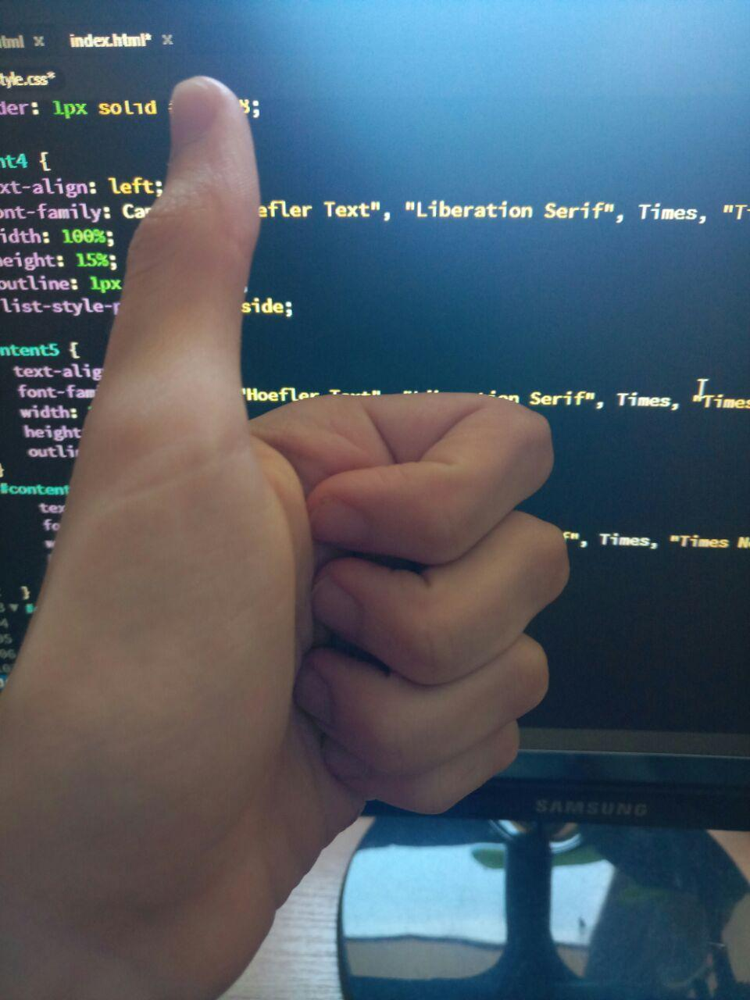

Меня зовут Кузенков Михаил. Мне 19. Мой дом находится в южной части Харькова, где находятся все заводы. Я не женат. Я учусь в университете НТУ "ХПИ" и возвращаюсь домой каждый день не позднее 8 вечера. Я не курю, но иногда выпиваю. Я ложусь в постель к 11 часам вечера, и я стараюсь получать восьмичасовой сон, несмотря ни на что. После того, как я выпиваю стакан теплого молока и делаю около 20 минут растяжек перед сном, у меня обычно не бывает проблем со сном до утра. Как ребенок, я просыпаюсь утром без усталости и стресса. На медосмотре сказали, что у меня нет никаких проблем со здоровьем. Я пытаюсь объяснить, что я человек, который хочет жить мирной жизнью. Я стараюсь не беспокоить себя какими-либо врагами, такими как победа и поражение, которые заставили бы меня спать ночью. Вот как я отношусь к обществу, и я знаю, что это приносит мне счастье. Хотя, если бы я сражался, я бы никому не проиграл.
Мой адрес электронной почты: sniper16112@gmail.com
Мои оценки
| Предмет | Фамілія викладача | Оцінка |
|---|---|---|
| Основи графічної композиції | Глібко | 100 |
| Нарисна геометрія | Федченко | 79 |
| АОС | Ломакін | 90 |
| Дискретна математика | Татарінова | 75 |
| Англійська мова | Танько | 95 |
| Правознавство | Семко | 95 |
| Фізичне виховання | Матузна | 80 |
| ООП | Водка | 82 |
Три слова про меня: Двуногое существо без перьев.
Три фотографии, отражающие мои настроения

Моя любимая цитата
«Да.». Конфуций
Интересный факт о Харькове
В Харькове жила самая молодая мама в мире!!!!!!!